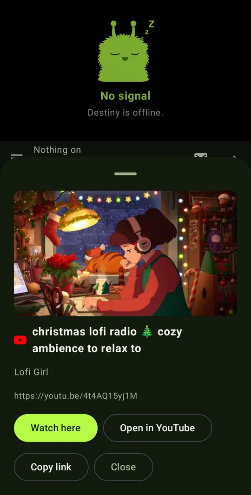

Glorp
destiny.gg chat and bigscreen on your Android phone. Chat works the way it does on the site. Streams play in Android's own video player instead of a web page, and Glorp does it all with about half the processor time a browser needs.
Free, for Android 8 or newer. A community app. Neither destiny.gg nor Destiny makes it.





A real video player
On the site, bigscreen plays each stream in that platform's web player: a whole web page inside the page, with its own scripts, overlays and limits. Glorp asks the platform for the stream itself and plays it in Android's media player, Media3. Kick, Twitch, YouTube, Rumble and AngelThump all play this way.
- Nothing runs around the video. The stream goes from the phone's video decoder to the screen, with no web player, scripts or overlays kept busy beside it.
- Sharper where the site holds back. Kick's web embed is stuck at 360p. Glorp plays the same stream at up to 1080p60, about 4 seconds behind live.
- No wasted pixels. Quality stops at your screen's size, so a phone never downloads and decodes a picture bigger than it can show. A quality menu lets you pick lower.
- Picture in picture when you leave the app, with chat still connected, and sound with the screen off, which switches to the smallest stream because nothing is being shown.
- The web player stays as a fallback for anything Glorp can't play itself.
Light on the phone
A phone app that sits open for a whole stream has to be careful. Glorp is built to do nothing it doesn't have to.
- Chat only stays connected while Glorp is on screen. Leave the app and the connection closes; notifications use a light check instead.
- Only the rows you can see get drawn, and new messages are prepared and measured away from the screen, so busy chat doesn't stutter.
- No video decoding when only the sound plays. A paused player left off screen is released.
- The screen stays awake only while video plays.
- The nuke and mutelinks lists are only checked while you're signed in and looking at chat.
Measured against the site in Chrome
One phone, an XREAL Beam Pro on Android 14, running on battery. Chrome and Glorp took turns every 12 to 35 minutes for an afternoon, so changes in how busy chat was hit both alike. Same brightness, sound at zero, screen always on, the same YouTube live stream for video. Chat ran at 10 to 70 messages a minute.
| Processor time | Chrome | Glorp |
|---|---|---|
| Chat | 1.25 cores | 0.62 cores |
| Chat and a stream | 1.49 cores | 0.92 cores |
| Chat, animations off in both | 1.06 cores | 0.60 cores |
Glorp does the same work with about half the processor time. The battery barely noticed on this phone: with chat alone Glorp lasted 10 to 20% longer per percent of battery, and with a stream both drained the same. Its screen, on with nothing running at all, drained almost as fast as either app, so the processor is a small part of the total there. Phones whose processors take a bigger share, and busier chat, are where the difference shows.
Everything chat does on the site
Glorp follows chat-gui, destiny.gg's own chat code, so chat looks and behaves the way it does in a browser.
- Emotes move the way they do on the site, with their colour changes, glows and extras like BibleThump's tears. Glorp reads the site's own emote stylesheet and is checked frame by frame against it. Combos count up to C-C-C-COMBO, flairs colour names, and Tier 5 names get the moving rainbow.
- Mentions, highlight words, tags with notes, the ignore list and timestamps.
- Whispers in their own conversations, with history.
- Polls you can vote in, the pinned message, and spotlighted messages.
- Subscriptions, gifted subs, donations, deaths, posts from X and the Vestaboard show up in chat.
- Censoring of muted and banned users' messages, and NSFW and NSFL messages hidden if you like.
- The site's commands,
/stalk,/mentionsand/tagincluded. The input suggests emotes, names and commands as you type. - Tap a name to focus chat on that person, as on the site. Hold it for their menu: mention, whisper, tags and their membership card, with photo, team, tier, standing, biography and, on the back, their signature.
- Tap a link for its preview, or an emote to see who made it and favourite it.
- Signed in from a computer, your chat settings follow your account and the site sees what you're watching.
Made for a phone
- Notifications when Destiny goes live, when someone mentions you, and when you get a whisper, without chat open. Mentions come from polecat.me's chat logs, so any sign-in works.
- Warnings before you send: Glorp tells you if a message would hit a nuke, mutelinks or a banned phrase. While one is on, a warning triangle sits at the top left of chat.
- The community's tools, built in: chat log search (rustlesearch.dev), every message that mentioned you (polecat.me), the links and pictures posted in chat with their reactions (linkers.ooo), the poll archive and movie nights. Their links in chat open in the app.
- YouTube and Rumble links show their titles, and play in Glorp's player.
- It updates itself, and Menu → Report a problem opens a GitHub issue with the details filled in.
Glorp's own
- Five themes: Glorp's green in dark and light, destiny.gg's own, and Aerith's light and dark with her round buttons and glowing input.
- Emoji name icons, a private tag only you see.
- Chat from people watching other streams, dimmed like the site's eye button, or hidden.
- Text size, and your phone's font or the site's.
- Your latest mention stays at the top until you close it, and your own alert words warn you before sending.
- Your pick of platform when Destiny is live on several.
- Settings → Sync keeps all of this the same on your other phones, stored encrypted.
- Test versions, which install as Glorp Probe, for anyone who wants to try what's next.
Install
On your phone, download the APK from the latest release and open it. Android asks once to let your browser install apps.
Or add
https://github.com/StrawWaffle/glorpto Obtainium.After that, Glorp offers new versions at the top of its menu.
Signing in
destiny.gg's login page can't run inside an app, because Twitch, Kick and Google block sign-in there. Glorp signs in two other ways.
- Sign in from a computer to get everything. Copy two values from your browser into Glorp's sign-in page and scan the code it shows. The page sends nothing anywhere.
- Paste a login key from your account's developer page to chat and whisper.
Glorp keeps your login on your phone, encrypted.
On a computer, if you want it
Glorp is a phone app, and the app is where to start. If you also use destiny.gg's chat in a browser, the Glorp userscript brings a few of Glorp's own things there: the themes, name icons, hiding other streams' chat, your latest mention kept in view, polecat.me's mentions, rustlesearch.dev's log search, and your icon and chat's tag in each name's menu. Settings → Sync keeps them the same as in the app.
It does much less than the app, and it needs Violentmonkey in your browser.
Problems and ideas
In Glorp, Menu → Report a problem writes a GitHub issue with the details filled in. No GitHub account? Whisper StrawWaffle in destiny.gg chat. Ideas are welcome the same way, or as an idea on GitHub.